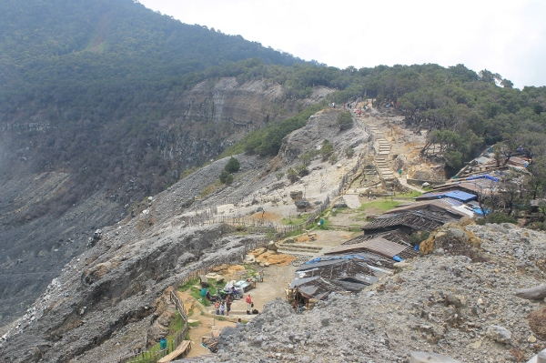
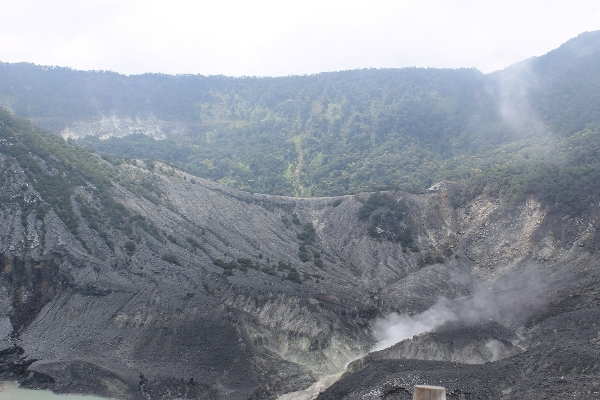

Gunung Tangkuban Perahu
Kabupaten Bandung, Jawa Barat | 2,084 MDPL
Bandung adalah ibu kota Jawa Barat yang memiliki banyak tempat wisata menarik untuk dikunjungi, salah satunya Gunung Tangkuban Perahu. Gunung yang memiliki celah di tengahnya (biasa disebut kawah) ini terletak di ketinggian 2.084 mdpl. Ketika berada di Tangkuban Perahu, suasana sejuknya dapat membuat pikiran Anda menjadi jernih.
Suhu di Gunung Tangkuban Perahu dapat mencapai 17 derajat celsius pada siang hari dan akan turun menjadi 2 derajat celsius ketika malam datang. Pohon-pohon pinus yang kokoh berdiri di sepanjang perjalanan menuju kawasan Gunung Tangkuban Perahu, menyajikan pemandangan hijau yang memberi kesan sejuk. Begitu tiba di Kawah Tangkuban Perahu, mata Anda akan terfokus pada pemandangan kawah yang terbentuk sejak berjuta-juta tahun yang lalu. Bau menyengat yang keluar dari belerang, menjadi aroma khas di sekitar kawasan wisata legenda ini.
Gunung Tangkuban Perahu dapat diakses melalui kendaraan bermotor, baik mobil maupun motor. Kondisi jalan yang tersedia sangatlah baik, sehingga para pelancong dapat menikmati perjalanan menuju Gunung Tangkuban Perahu dengan nyaman. Tak hanya pemandangan kebun-kebun teh dan bukit yang sangat indah, ketika melintasi jalan menuju Gunung Tangkuban Perahu, Anda juga akan disajikan pemandangan kota dari jalan yang berada di atas bukit. Masyarakat Sunda mengenal Gunung Tangkuban Perahu melalui mitos cerita legenda Sangkuriang. Legenda inilah yang menjadi asal-usul terbentuknya Gunung Tangkuban Perahu.